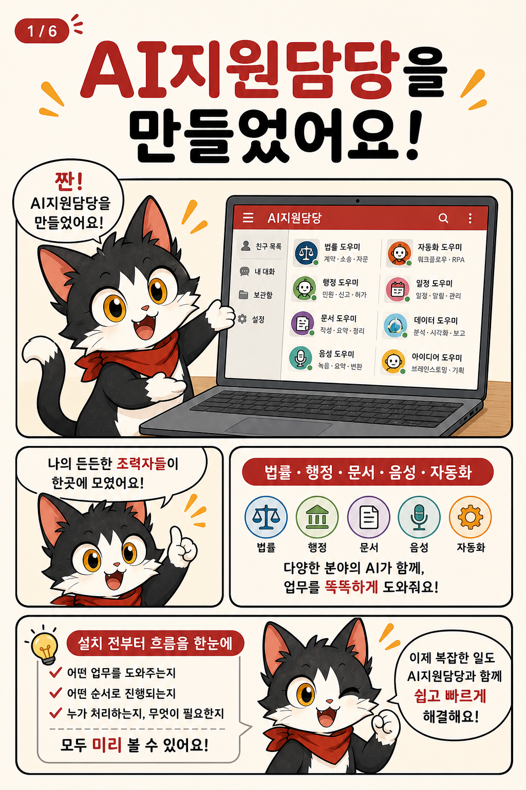
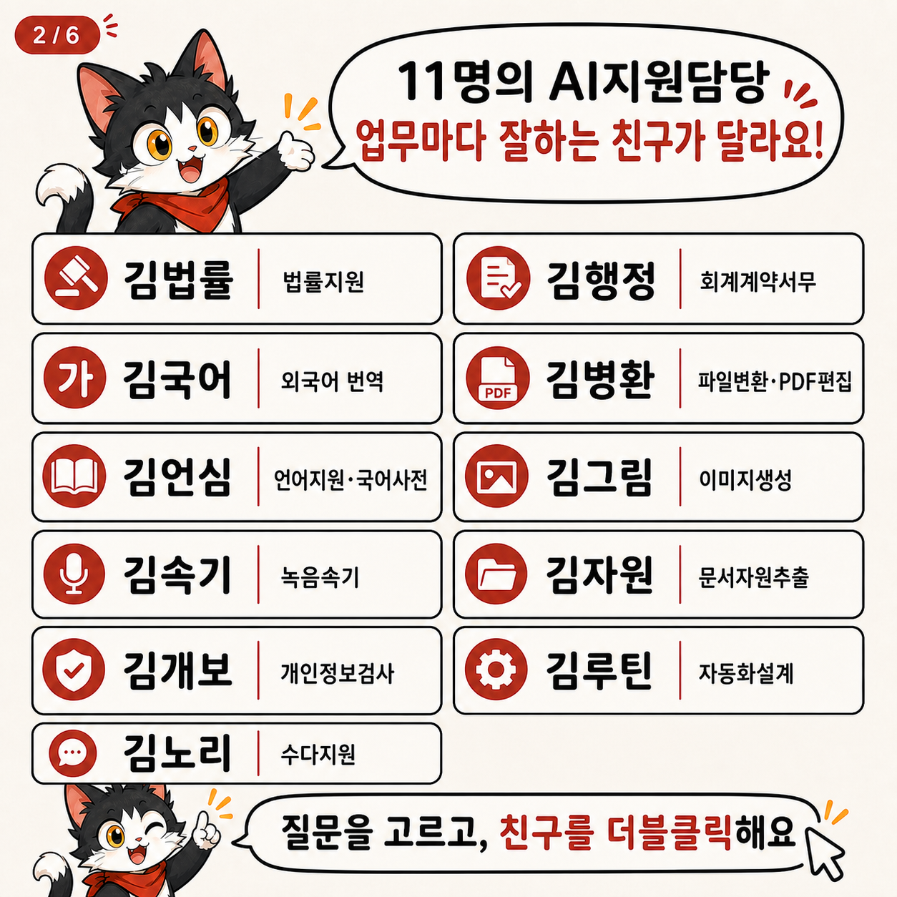
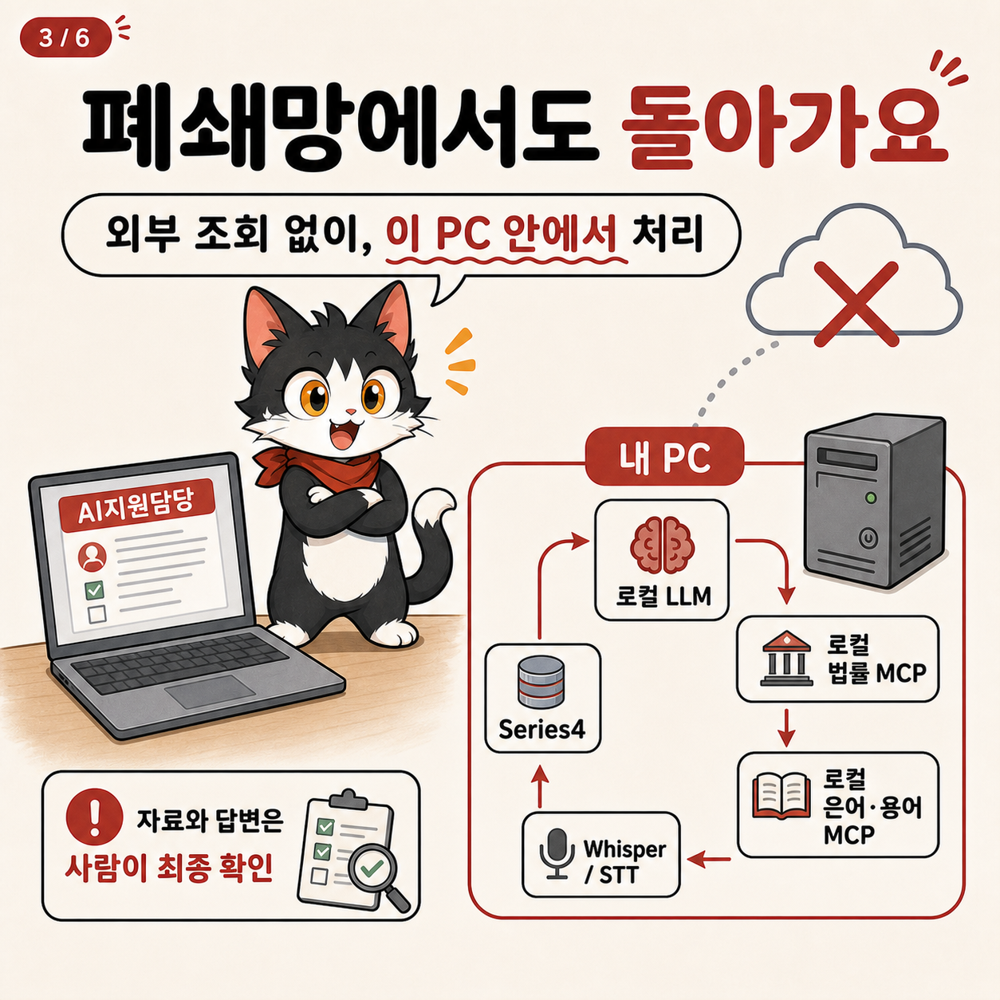
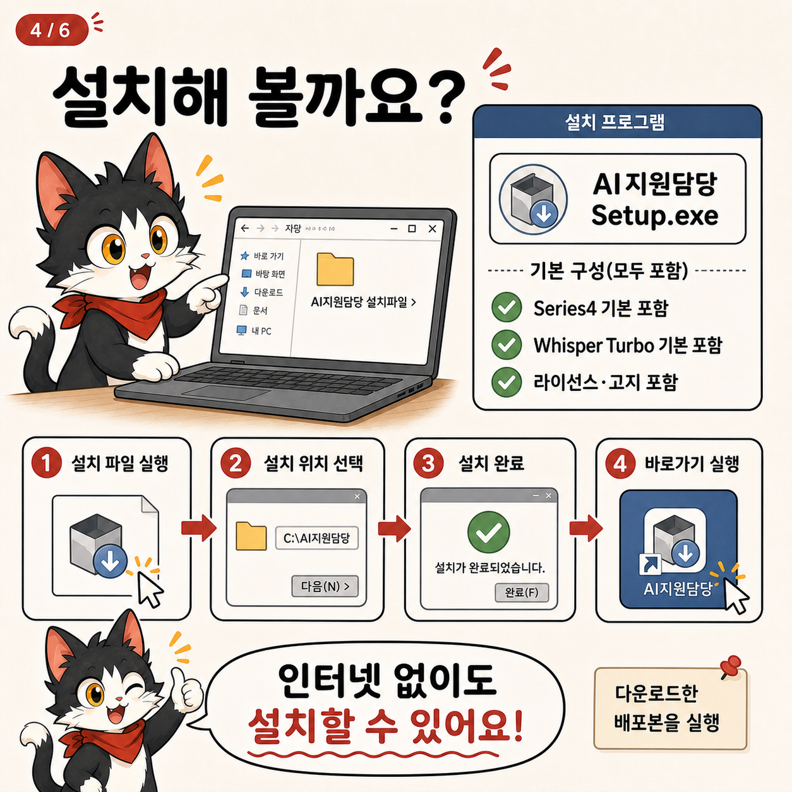
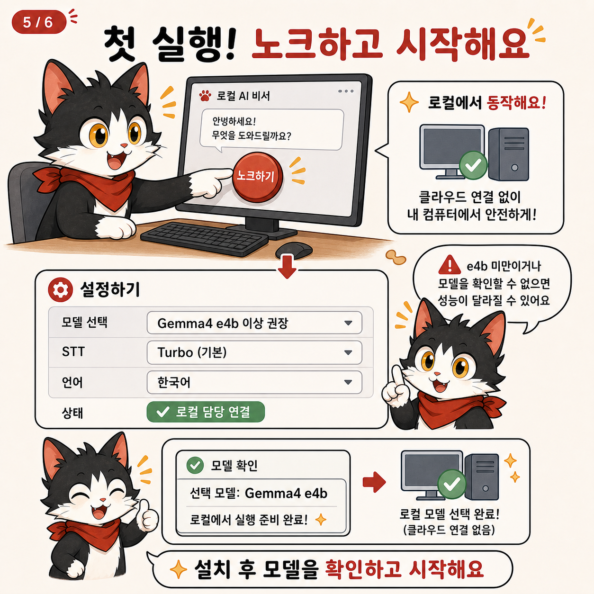

법률·행정·국어·번역·문서·속기·개인정보·반복업무 담당자를 친구목록에서 열어 질문합니다.
gonggong-ax-local-series-1-AISupportMessnger
설치하기 전에,
AI지원담당을 먼저 써보세요.
공공기관 실무자를 위한 로컬 우선 업무 메신저 MVP입니다. 친구목록에서 담당자를 열고, 법률·행정·문서·속기·자동화 기능의 흐름을 한 화면에서 확인할 수 있습니다.

고양이 만화 1장 · 이 프로젝트가 무엇인지 먼저 보여줍니다.첫 번째로 눌러볼 곳
친구목록 → 더블클릭 → 채팅 → 기능 패널
왼쪽 질문을 고르면 오른쪽 앱 모의창에서 담당자가 표시됩니다. 실제 LLM, 법령 검색, 파일, 마이크, OS 자동화는 실행하지 않는 정적 체험입니다.
초보자용 원클릭 설치
다운로드 후 네 단계면 됩니다.
설치파일에는 Windows용 Series4 동반 프로그램과 김속기 Turbo STT 기본 자산이 포함됩니다. 대화 답변은 이 PC의 로컬 Ollama 모델을 사용합니다.
다운로드
Windows 원클릭 다운로드 버튼을 누르고 설치파일이 끝까지 받아질 때까지 기다립니다.
설치
Setup.exe를 실행하고 설치 위치를 고른 뒤 바탕화면 바로가기를 만듭니다.
모델 확인
첫 화면의 모델 버튼에서 이 PC의 Ollama 모델을 확인합니다. Gemma4 e4b 이상을 권장합니다.
노크하기
친구목록에서 김법률·김행정 등 담당자를 더블클릭하고 질문을 시작합니다.
주의: 이 저장소와 설치파일은 인터넷 없이 앱을 실행하도록 설계했지만, 대화 모델(Ollama)은 사용자의 PC에 별도로 준비해야 합니다. Turbo STT와 Series4는 설치파일에 포함되며, small STT는 앱의 파일 선택 설치 흐름을 사용합니다.
MVP 범위
지금 되는 것과 아직 아닌 것
완제품처럼 과장하지 않고, 설치 전 판단에 필요한 경계를 먼저 공개합니다.
김법률·김행정은 동봉된 로컬 MCP와 로컬 자료만 사용합니다. API 키·대화·업무파일을 공개 저장소에 넣지 않습니다.
법률·행정 답변은 실무 검토 초안입니다. 생성형 이미지·회의록·자동화도 사용자가 확인하고 실행해야 합니다.
MVP라는 뜻
- 대표 업무 흐름과 안전 경계를 먼저 검증하는 1차 공개본입니다.
- 모든 기관 규정·모든 문서 형식·모든 화면 환경에서의 성공을 보장하지 않습니다.
- 법적 판단, 자동 제출, 자동 결재, 화자분리, 클라우드 동기화는 제공하지 않습니다.
- 설치 전에는 웹 데모와 만화로 흐름을 확인하고, 실제 설치 후에는 테스트 문서와 테스트 계정으로 검증하세요.
고양이로 보는 설치 안내
6장 만화로 따라가기
무엇을 만들었는지, 무엇이 로컬인지, 어떻게 설치하고 첫 질문을 하는지 순서대로 설명합니다.



